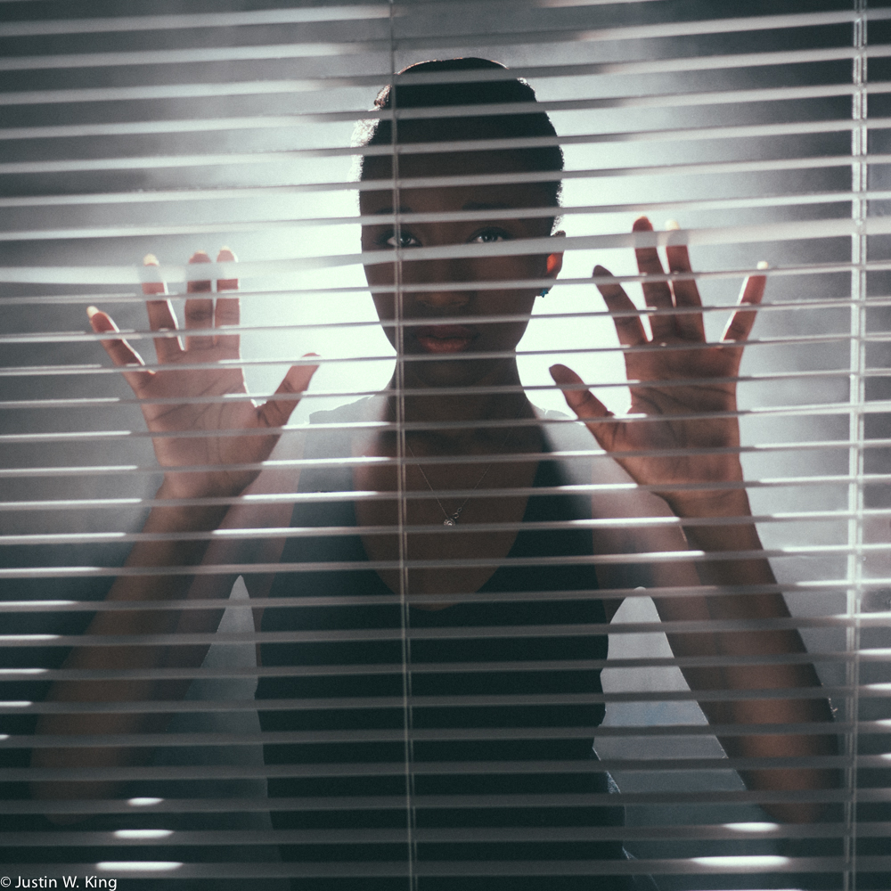

BIOGRAPHY
After Justin W. King earned his masters degree in Lighting Design from NYU Tisch's Design for Stage and Film, he went on to work as a filmmaker on feature films and television shows. Although he continued to design for plays in New York, Justin began to work fashion films for local Brooklyn Designers. This naturaly led him into fashion photography. With a background in theatre and design, Justin is excited to collaborate with others and explore the creative possibilities in the world of fashion photography and filmmaking.